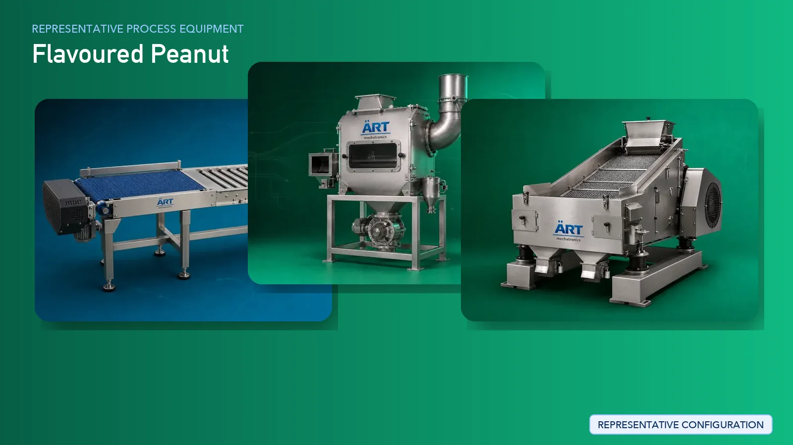

Peanut Processing Plant & Machinery (Salted, Roasted & Coated Peanuts)
Peanut processing is a rapidly growing segment in the global snack food industry, covering products such as salted peanuts, roasted peanuts, masala peanuts, and coated peanuts. The manufacturing process requires precise cleaning, controlled roasting or frying, uniform coating, and consistent…

About Flavoured Peanut processing
ART Mechatronics provides complete turnkey solutions for peanut processing plants, offering advanced systems for cleaning, roasting, frying, coating, seasoning, and packaging. Our solutions are designed for high efficiency, consistent product quality, and scalable production for FMCG and export markets.
Complete Peanut Process Flow
Raw peanuts are received, stored, and fed into the processing system.
Ensures smooth and continuous flow.
Peanuts are cleaned to remove dust, stones, and impurities.
Ensures product purity and protects machinery.
Peanuts are graded based on size and quality.
Ensures uniform processing and premium output.
Machines Used:
- Roaster
- Hot Air Roasting System
- For Fried Peanuts:
- Oil frying for crispy texture
Machines Used:
- Batch Fryer
- Continuous Fryer
Ensures:
- Uniform roasting/frying
- Consistent taste and texture
Excess oil is removed after frying.
Peanuts are coated with flour or batter to create crunchy outer layers.
Enables:
- Uniform coating
- Consistent product shape
Coated peanuts are fried or roasted again to achieve final texture.
Salt, spices, and flavoring agents are applied.
Ensures uniform flavor distribution.
Final inspection ensures consistency and quality.
Finished peanuts are packed into pouches or containers.
Suitable for retail and export packaging.
Machinery Required for Peanut Processing Plant
- Material Handling Systems
- Pre Cleaner
- Destoner
- Grading Machine
- Roaster / Fryer
- De-Oiling Machine
- Coating Drum
- Batter Mixing System
- Seasoning Drum
- Cooling Conveyor
- Inspection System
- Packaging Machines
Turnkey Peanut Plant Solutions
ART Mechatronics offers complete turnkey solutions for peanut processing plants, including:
- Process design & plant layout
- Roasting, frying, and coating systems
- Seasoning and flavoring systems
- Automation & control panels
- Packaging line integration
- Installation & commissioning
- After-sales support
We customize solutions based on:
- Product type (salted, roasted, coated, flavored)
- Production capacity
- Frying or roasting method
- Packaging format
Why Choose Art Mechatronics
- Expertise in snack and peanut processing systems
- Advanced coating and seasoning technology
- High-efficiency roasting and frying systems
- Hygienic food-grade machinery design
- Consistent product quality
- Global export capability
Machinery in a Flavoured Peanut plant
Where it's used
Get pricing & specs for the Flavoured Peanut plant
Share the product, target capacity, current process and plant location. These details help our engineers discuss the right machine or line configuration.
One partner, from design to start-up
ART Mechatronics designs, manufactures, installs and commissions your Flavoured Peanut solution with regional presence in India, UAE and Thailand.